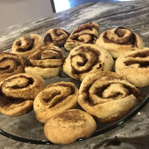

Cinnamon Rolls

About the recipe!
This recipe has been a staple in my family for years!
I still remember, oh, it seems like eons ago, waking
up on sunny weekend mornings at Aunt Bertha's farm out
East to the smell of these quick-rising cinnamon rolls.
My sisters and I would race downstairs as soon as we heard
the oven go off and compete to see who would get the ones
in the middle (they were the gooiest!!).